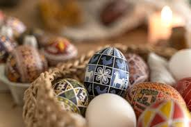
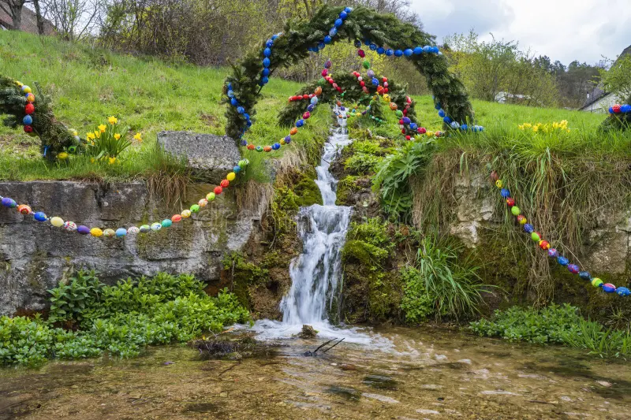

Celebração da Páscoa na Alemanha
Na Alemanha, a Páscoa é celebrada com mercados tradicionais chamados Oster Märkte, onde artesãos vendem ovos decorados, coelhos de chocolate e outros itens temáticos. Esses mercados criam uma atmosfera festiva nas praças das cidades.
Uma tradição única é a "Osterbrunnen", fontes decoradas com ovos pintados e fitas coloridas. As famílias trocam ovos decorados à mão, simbolizando fertilidade e renovação. O coelho da Páscoa também é popular, escondendo ovos para as crianças encontrarem.
Religiosamente, a Páscoa inclui procissões e missas, mas o foco cultural está nas decorações e na culinária, como o bolo de Páscoa "Osterlamm". É uma época de renovação, com a primavera chegando após o inverno rigoroso.



